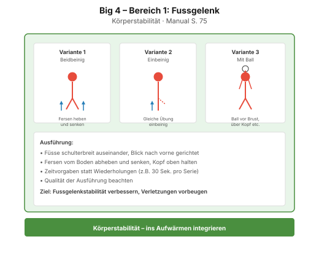
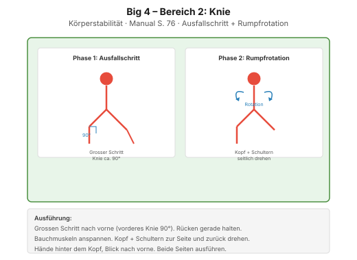
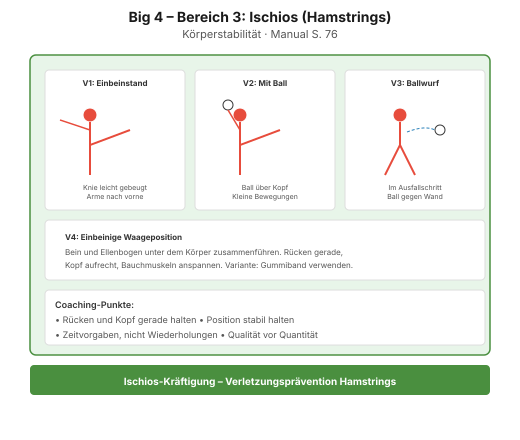
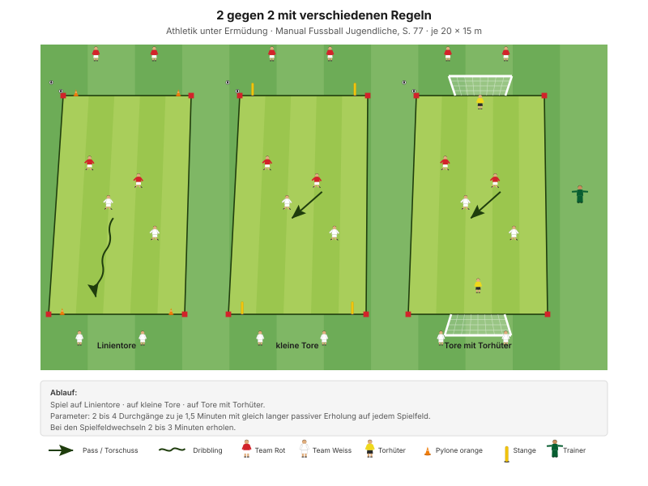

Ein stabiler Rumpf ist das, was den Zweikampf entscheidet – nicht die Muskelmasse. Wer die Position halten kann, gewinnt den Ball; wer umfällt, verliert ihn.
"Den Körper stabil halten" Erscheinungsform A2, Manual Fussball Jugendliche, S. 72
Der wichtigste Satz des Abends steht auf S. 75: Nenne jeweils 2 oder 3 wichtige Punkte in Bezug auf korrektes Üben. Achte auf eine hohe Qualität der Ausführungen. Eine saubere Wiederholung ist mehr wert als zehn schnelle.
| Zeit | Min | Teil | Inhalt |
|---|---|---|---|
| 0–4 | 4 | Besammlung | Thema ansagen, Gruppen einteilen |
| 4–16 | 12 | E1 | Ballführen und Tore durchdribbeln · Big 4 zwischen den Wiederholungen |
| 16–22 | 6 | E2 | Bälle jagen |
| 22–30 | 8 | E3 | Sprint und Duell (Explosivität) |
| 30–45 | 15 | H1 | Die vier Bereiche · Körperstabilität komplett |
| 45–48 | 3 | Pause | Trinken, Umbau |
| 48–70 | 22 | H2 | 2 gegen 2 mit verschiedenen Regeln |
| 70–82 | 12 | Abschluss | Freies Spiel 5 gegen 5 plus 2 Torhüter |
| 82–90 | 8 | Ausklang | Cool-down, zwei Entwicklungsfragen, Verabschiedung |
| Total | 90 |
Einstieg 26 · Hauptteil 37 · Abschluss 20 Min. – nach dem Trainingsschema des Manuals (S. 43).
Wenig Aufbau, viel Inhalt: Das Einstiegsfeld bleibt bis zur Pause, danach werden daraus drei kleine Felder für H2. H1 findet im Halbkreis um den Trainer statt und braucht keinen Aufbau.
Eigene Skizze · Platzaufteilung
Nur einmal aufbauen – das Einstiegsfeld liegt im späteren Spielfeld.
12 Minuten · 32 × 24 m · alle 12 Spieler
Eigene Skizze · Ballführen und Tore durchdribbeln
3 Wiederholungen à 1'30''–2' – zwischen den Wiederholungen je zwei Präventionsübungen.
"Tackeln in seitlicher Position (auf Vorderfuss) – Duell mit dem Körper führen" SFV-Lernbaustein "Einstieg TA: 1 gegen 1 defensiv", Phase 1
Je zwei Übungen zwischen den Wiederholungen, 25 Sekunden pro Übung:
| Bereich | Übung | Worauf achten |
|---|---|---|
| Fussgelenk | Einbeinsprünge seitlich | Bei der Landung knickt das Knie nicht ein, Oberkörper leicht nach vorne. |
| Knie | Miniband Side Steps | Miniband immer unter Spannung halten. |
| Hüfte | Mobilität in tiefer Position | Die Fersen bleiben in Kontakt mit dem Boden, Blick nach vorne. |
| Hamstrings | Standwaage mit Partner | Keine Rotation bei den Schlägen auf den Ball zulassen. |
"Arbeit mit Zeitvorgaben – nicht mit Anzahl Wiederholungen." Prinzip Körperstabilität, Manual Fussball Jugendliche, S. 75
Zwei Punkte pro Übung nennen, nicht mehr. Qualität vor Tempo.
6 Minuten · gleiches Feld · 3 Wiederholungen à 1'30''–2'
"Duelle suchen und mit dem Körper führen – Tackling (Gegner vom Ball trennen)" SFV-Lernbaustein "Einstieg TA: 1 gegen 1 defensiv", Phase 2
8 Minuten · 2 Bahnen · Paare bilden
| Parameter | Vorgabe |
|---|---|
| Distanz | 15–30 m |
| Wiederholungen | 3 |
| Pause zwischen Wiederholungen | 1/15 (Belastung × 15) |
| Serien | 3 |
| Pause zwischen Serien | 1'30''–2' |
"Erholungszeit: 10- bis 20-fache Dauer der Belastungszeit, abhängig von der Laufdistanz. Vollständig erholen zwischen den Wiederholungen." Prinzipien Explosivität, Manual Fussball Jugendliche, S. 72
15 Minuten · Halbkreis, Trainer in der Mitte · alle 12 Spieler
Vier Bereiche, je etwa 3–4 Minuten. Pro Bereich die Grundübung und eine Steigerung. Immer mit Zeitvorgabe arbeiten, nie zählen lassen.
Bereich 1 · Fussgelenk (Manual S. 75, Diagramm 50)

Bereich 2 · Knie (Manual S. 76, Diagramm 51)

Bereich 3 · Ischios (Manual S. 76, Diagramm 52)

Bereich 4 · Hüfte (Manual S. 77, Diagramm 53)

"Nenne jeweils 2 oder 3 wichtige Punkte in Bezug auf korrektes Üben. Achte auf eine hohe Qualität der Ausführungen. Passe die Aufgaben und deine Anweisungen dem Alter und dem Trainingsstand der Spieler/innen an." Coachingpunkte Körperstabilität, Manual Fussball Jugendliche, S. 75
22 Minuten · 3 Felder à 20 × 15 m · alle 12 Spieler
Manual-Vorlage · Diagramm 54 "2 gegen 2 mit verschiedenen Regeln" (S. 77)

Drei Felder à 4 Spieler – alle 12 sind gleichzeitig im Duell.
Auf 20 × 15 m im 2 gegen 2 gibt es kein Ausweichen – jeder Ball ist ein Duell. Genau hier zeigt sich, ob die Stabilität aus H1 im Spiel ankommt: Wer den Körper zwischen Ball und Gegner bringt und dabei stabil bleibt, gewinnt fast jeden Ball.
12 Minuten · gleiches Feld, kein Umbau
Keine Auflagen, keine Bonusregeln. Hier wird sichtbar, was von den 70 Minuten davor hängen geblieben ist.
8 Minuten · Cool-down im Gehen, dann Kreis in der Mitte
Zuerst 3–4 Minuten lockeres Auslaufen und Mobilität, dann der Kreis. Zwei Fragen – die Antworten kommen von den Spielern, nicht vom Trainer:
"Gelingt es dir, die Konzentration lange aufrecht zu erhalten? Was lenkt dich ab?"
"Hast du bis zum Schluss alles gegeben?" Entwicklungsfragen, Manual Fussball Jugendliche, S. 82 und 81
Material aufräumen – laut Teamregel Respekt Teamarbeit, nicht Strafe.
| Teil | Vorlage | Seite |
|---|---|---|
| E1 – E3 | SFV-Lernbaustein "Einstieg TA: 1 gegen 1 defensiv", Phasen 1–3 | – |
| H1 | Körperstabilität, Bereiche 1–4 (Diagramme 50–53) | 75–77 |
| H2 | Spielform auf kleinem Feld "2 gegen 2 mit verschiedenen Regeln" (Diagramm 54) | 77 |
| Ziele, Prinzipien, Coaching | Körperstabilität und Mobilität | 75 |
| Parameter H2 | Ermüdungsresistenz | 77 |
| Explosivität | Athletik und Gesundheit | 72 |
| Trainingsaufbau | Trainingsschema (Abb. 19) | 43–45 |
Alle Seitenangaben beziehen sich auf das J+S Manual Fussball Jugendliche (BASPO/SFV, 2022). Spielerzahlen und Feldmasse sind auf einen Kader von 12 Spielern angepasst. Dieser Trainingsplan wurde mit Unterstützung von KI (Claude, Anthropic) erstellt.